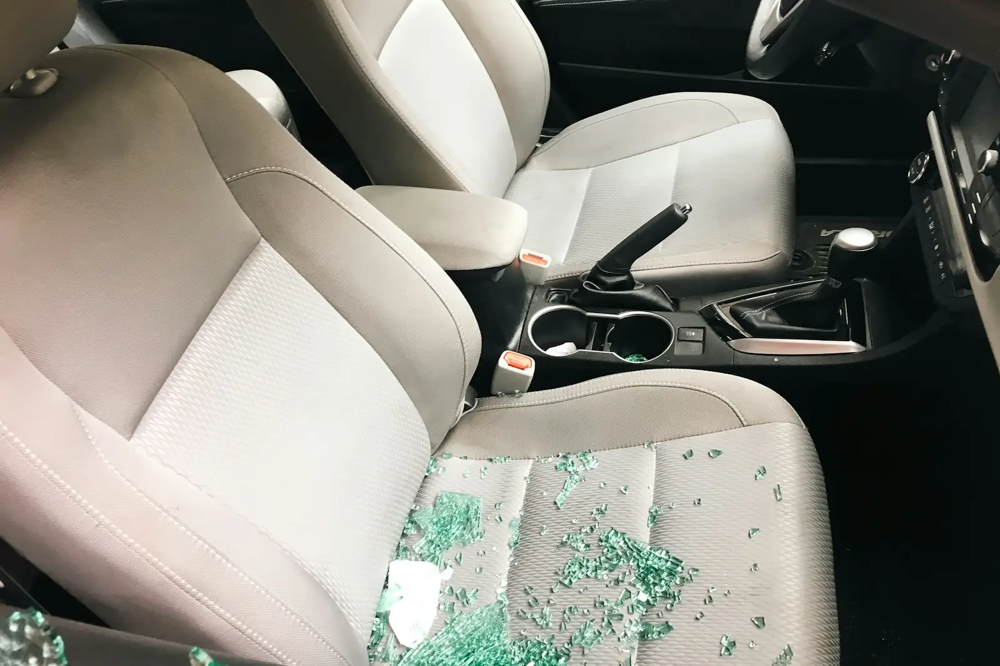

Car window replacement in Garden Grove covers door windows and the small fixed quarter glass. Garden Grove Auto Glass Repair comes to your driveway, office or apartment carport, clears out the broken glass and puts in a new window so the car is sealed again, usually the same day.

Side windows are tempered glass, so they break into hundreds of small cubes. The technician takes off the inside door panel, vacuums glass out of the door, the window tracks and the cabin, then fits the new window to the regulator and checks that it runs up and down smoothly. Quarter glass is either bonded or set in a rubber gasket, and both are sealed so water and dust stay out.
Smash-and-grabs happen in hotel lots, shopping centers and apartment carports.
A failed regulator can drop the glass into the door or crack it.
The small fixed windows still let dust and damp air in when broken.
Side glass often breaks in a fender bender even when the windshield holds.
A window stuck down leaves the car open overnight.
Plastic and tape will not survive a drive on the 22.
Side windows are made of tempered glass, which is heat-treated so it breaks into small dull cubes instead of long sharp pieces. That is safer in a crash, but it means a side window cannot be repaired like a windshield chip. Once the surface tension is broken, the whole pane lets go. People ask, “Can you just glue it back?” Not with tempered glass. That is also why glass keeps turning up in the door and under the seats for weeks if it is not cleaned out properly.
The cost of car window replacement in Garden Grove depends on which window broke and what is built into it. A plain front door window is the simplest job. Privacy-tinted glass, acoustic door glass on newer cars and frameless windows on coupes take more parts and time. Break-ins usually fall under comprehensive coverage, so your deductible applies. Call with the vehicle and which window broke and we will give you a free quote.
| Plastic and tape | New window | |
|---|---|---|
| How long it lasts | A day or two in calm weather | Permanent, sealed like the factory window |
| Security | Anyone can cut through it | Locks and closes normally |
| Wind and dust | Flaps and leaks at speed | Quiet and sealed |
| Broken glass | Still in the door and on the floor | Vacuumed out during the job |
If the back glass broke too, see rear windshield replacement in Garden Grove. A cracked front windshield can be done on the same visit with windshield replacement.
Often yes, as long as the glass for your vehicle is in stock nearby. Common door windows usually are. Less common quarter glass may take a day or two to arrive.
Yes. The technician vacuums glass out of the door, the window track, the seats and the floor. Tempered glass hides in seat seams, so it is worth doing properly.
Many insurers ask for one with a break-in claim, and it helps if anything was stolen. Garden Grove Police take non-emergency reports, and we can still replace the window before the claim is settled.
Factory privacy glass is ordered to match your other windows. California only allows very light tint on front side windows, so we match factory glass rather than add dark film.
Call for a free car window replacement quote in Garden Grove. We come to you and clean up the glass.
Call (714) 200-1764 Now